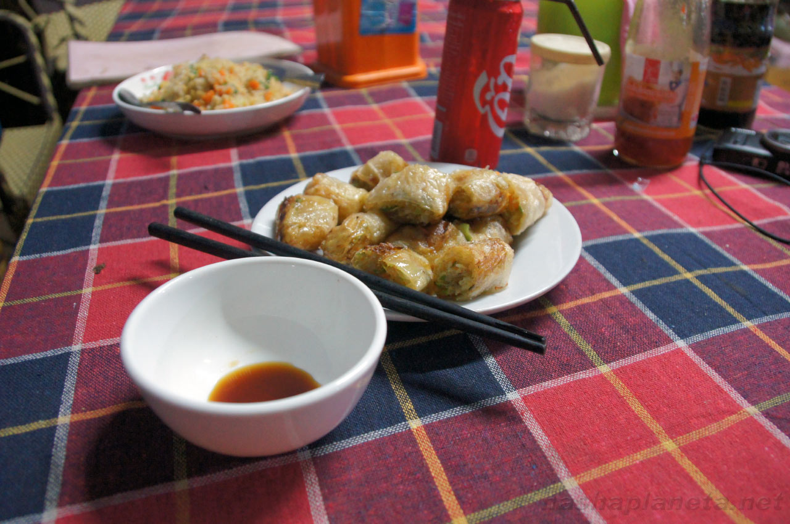
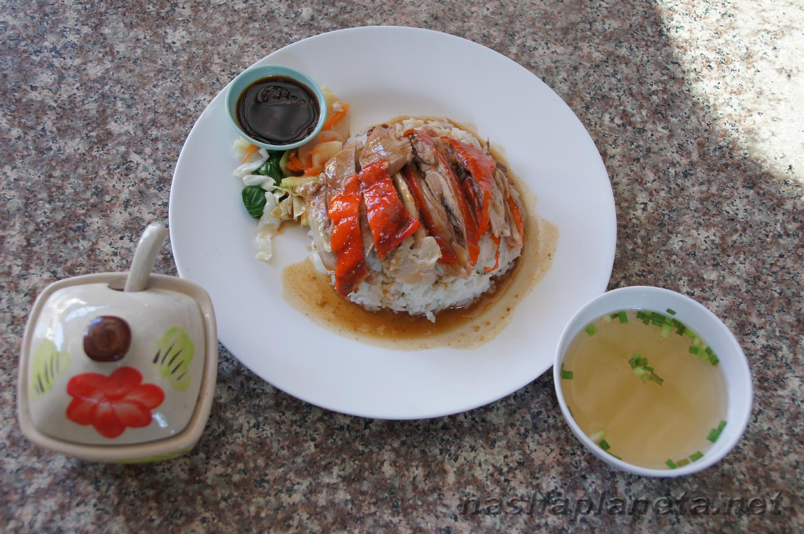
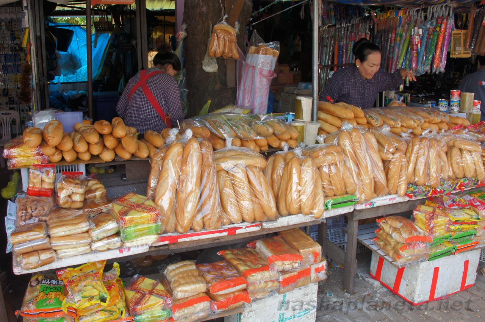
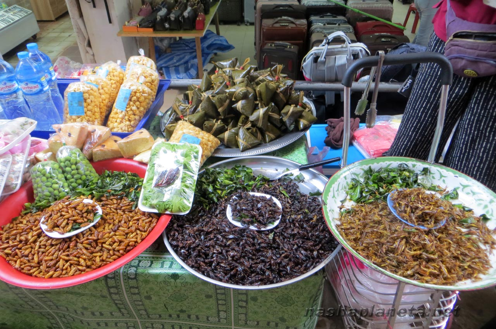

×

Laos
____
Традиционная еда
Фреш-ролы с рыбным соусом — Вместо соли повсеместно используют рыбный соус нампа (Nam pa) или более густую рыбную пасту падек (Padaek) с кусками рыбы, которые подаются ежедневно к рису или любому другому блюду.

Можно попробовать даже утку по-пекински — Наиболее распространенными видами мяса являются говядина, свинина и курица. Однако, вместо говядины часто «подсовывают» буйволятину, которая отличается большей суховатостью. Сами лаосцы не часто балуют себя мясом, а только по значимым в их жизни событиям. В глубинке могут употреблять мясо пойманных диких животных и птиц (вараны, белки, утки).

Булочная — Здесь принято есть хлеб, он прочно закрепился со времен колонизации страны Францией. Сегодня французские багеты и другую выпечку можно повсеместно встретить на улицах и в пекарнях. Быстро перекусить «сэндвичем» из багета с начинкой из мяса или рыбы, овощей и всякой всячины, прогуливаясь до очередной достопримечательности.

Насекомые на рынке в Лаосе — Среди экзотических блюд, помимо всевозможных жареных во фритюре кузнечиков, куколок, тараканов, пауков и прочих, особо стоит отметить жареных крыс. Сегодня их не встретишь в городах и туристических районах, но они могут вам попасться в отдаленных селах.

____